There are 4 major concepts that make an Object Oriented. These are Encapsulation, Abstraction, Polymorphism and Inheritance. These are also called as 4 pillars of Object-Oriented Programming (OOP).
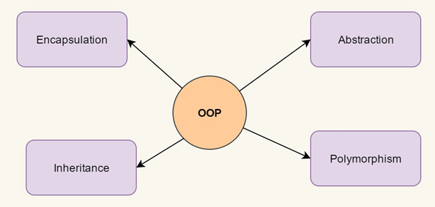
Encapsulation is the mechanism of hiding of data implementation by restricting access to public methods. Instance variables are kept private and accessor methods are made public to achieve this. Look at the example below:
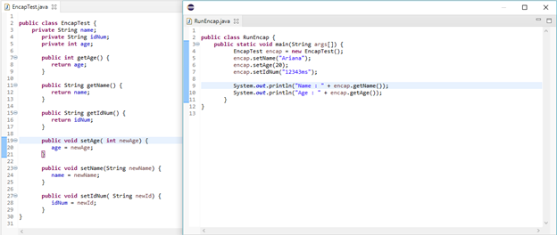
The public setXXX() and getXXX() methods are the access points of the instance variables of the EncapTest class. Normally, these methods are referred as getters and setters. Therefore, any class that wants to access the variables should access them through these getters and setters. Output below:
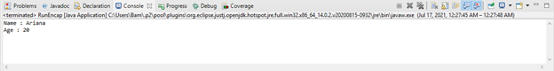
Abstraction is the concept of object-oriented programming that "shows" only essential attributes and "hides" unnecessary information. The main purpose of abstraction is hiding the unnecessary details from the users. Abstraction is selecting data from a larger pool to show only relevant details of the object to the user. It helps in reducing programming complexity and efforts. This section provides you an example of the abstract class. To create an abstract class, just use the abstract keyboard before the class keyword, in the class declaration. Declaration and Output below:
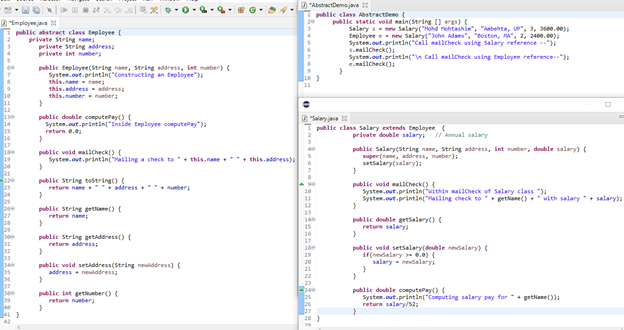
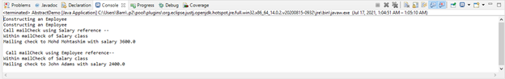
Polymorphism is derived from 2 Greek words: poly and morphs. The word “poly” means many and “morphs” means forms. So, polymorphism means many forms. It is also the ability of an object to take many forms. To simply put, polymorphism in java allows us to perform the same action in many different ways. Any Java object that can pass more than one IS-A test is considered to be polymorphic and in java, all the java objects are polymorphic as it has passed the IS-A test for their own type and for the class Object. Let’s say we have a class Animal that has a method sound(). Since this is a generic class so we can’t give it an implementation like: Roar, Meow, Oink etc. We had to give a generic message.
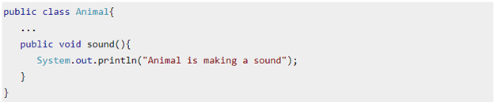
Now let’s say we have two subclasses of Animal class: Horse and Cat that extend Animal Class. We can provide the implementation to the same like this:
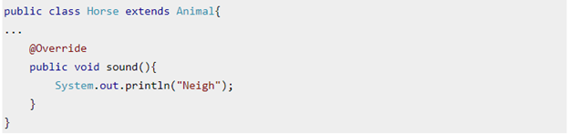
and
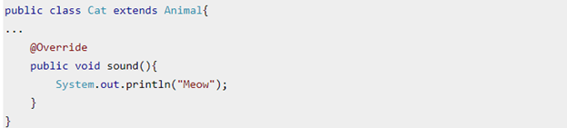
As you can see that although we had the common action for all subclasses sound() but there were different ways to do the same action. This is a perfect example of polymorphism (features that allows us to perform a single action in different ways).
Types of Polymorphism
Polymorphism in Java can be performed by two different methods
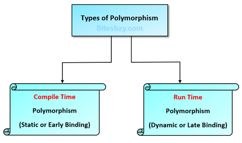
1. Static Polymorphism also known as compile time polymorphism – Method Overloading in java is an example of compile time (or static polymorphism).
Method Overloading - is defined as a process that can create multiple methods of the same name in the same class, and all the methods work in different ways. Method overloading occurs when there is more than one method of the same name in the class. Example below:
Overload.java
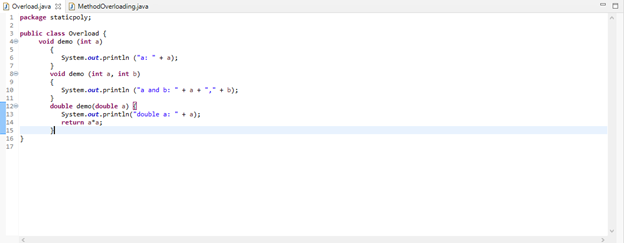
MethodOverloading.java
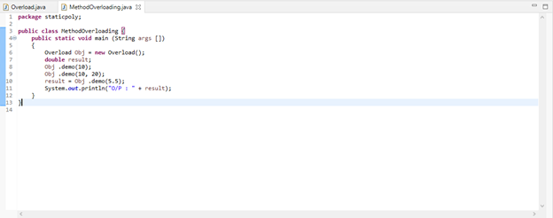
Here the method demo() is overloaded 3 times: first method has int parameter, second method has 2 int parameter and third one is having double parameter which method is to be called is determined by the arguments we pass while calling methods. This happens at compile time so this type of polymorphism is known as compile polymorphism. Output below:

2. Dynamic Polymorphism also known as runtime polymorphism - is a process in which a call to an overridden method is resolved at runtime, that’s why it is called runtime polymorphism. Method Overriding in Java is example of runtime time (or dynamic polymorphism)
Method Overriding - is defined as a process when the subclass or a child class has the same method as declared in the parent class. Example below:
Animal.java
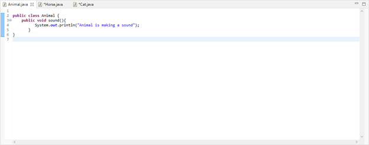
Horse.java
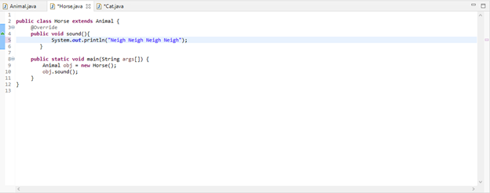
Output:
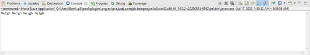
Cat.java
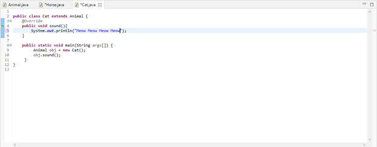
Output:
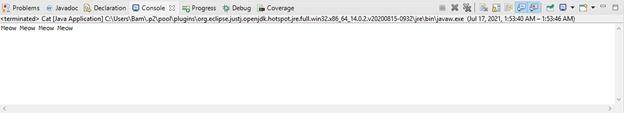
For more information about this visit this link
Inheritance is the mechanism in java by which one class is allowed to inherit the features (fields and methods) of another class. In this example, you can observe two classes namely Calculation and My_Calculation. Using extends keyboard, the My_Calculation inherits the methods addition() and Subtraction() of Calculation class.
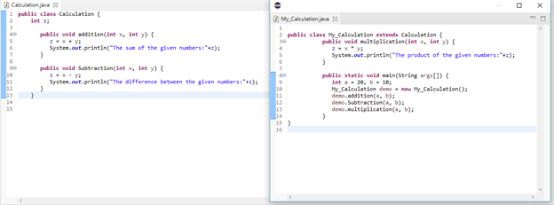
After executing the program, it will produce the following result
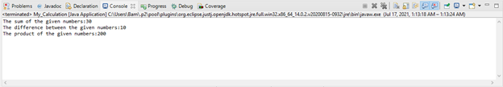
Types of inheritance in Java
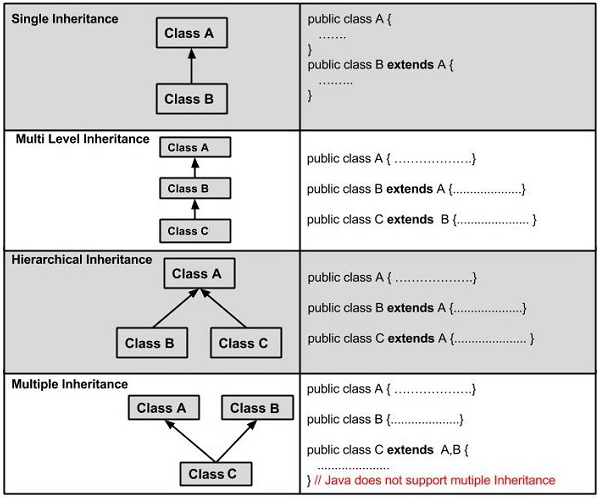
References
First Reference
Second Reference
Third Reference
Fourth Reference
Fifth Reference
Sixth Reference
Seventh Reference